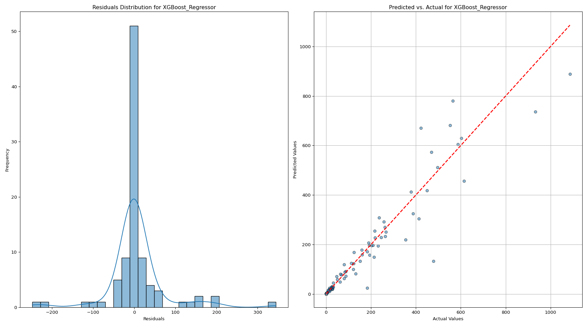
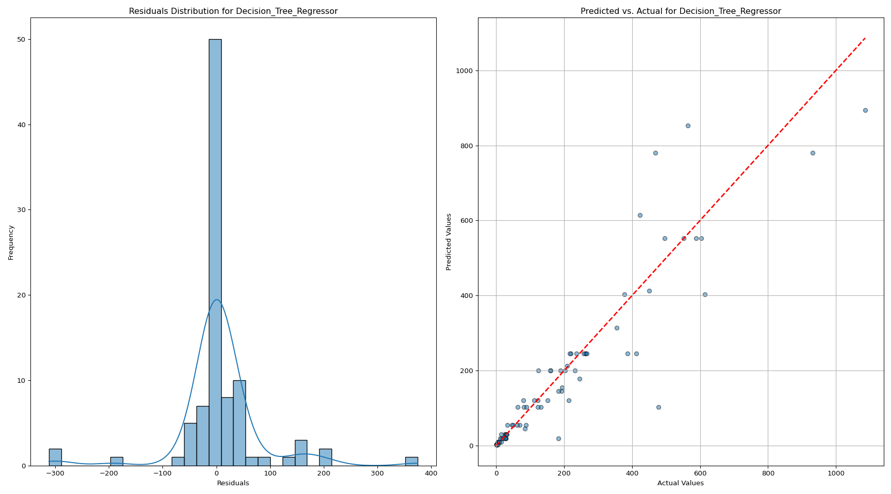
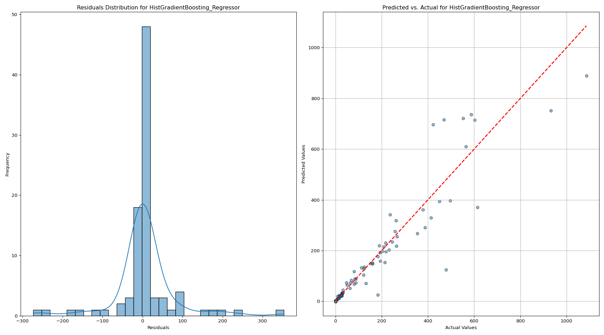
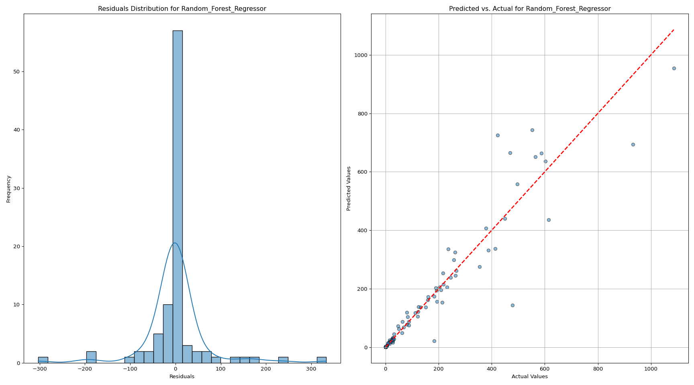
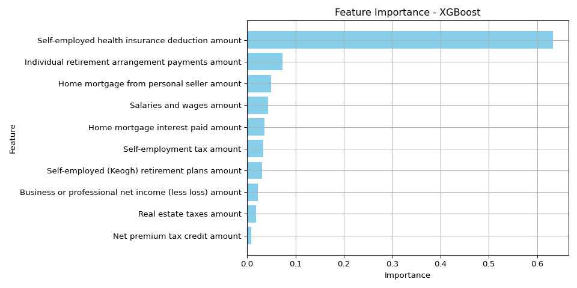

Using IRS Data to Predict Electric Vehicle Count
Abstract
This study investigates the use of advanced machine learning models to predict vehicle count by zip code, utilizing a dataset enriched with socio-economic, demographic, and regional features. The primary aim is to accurately estimate vehicle counts, aiding in efficient resource distribution and urban planning. We implemented and evaluated several models, including Decision Tree, Random Forest, XGBoost, and HistGradientBoosting, focusing on their accuracy, interpretability, and computational efficiency.
Each model was trained and validated using cross-validation and a hold-out test set, with performance metrics such as Mean Absolute Error (MAE), Mean Squared Error (MSE), and R-squared used to assess their effectiveness. Among the models, the Random Forest model demonstrated superior performance, offering the best balance of predictive accuracy and model robustness. It effectively captured the complex interactions between the features and the target variable, outperforming the other models in terms of both accuracy and generalization.
The results highlight the XGBoost model’s effectiveness in handling diverse and complex datasets, making it a valuable tool for predicting vehicle counts in different zip codes. This study provides critical insights into the practical applications of machine learning in urban planning and resource management, particularly in the context of transportation and infrastructure development.
Introduction
The increasing adoption of electric vehicles (EVs) is a pivotal shift in the transportation sector, driven by growing environmental concerns, advancements in technology, and supportive government policies. Understanding the factors that influence the distribution of EVs is essential for developing targeted policies and infrastructure, such as charging stations and incentives. However, EV adoption is not uniform across regions; it varies significantly based on socio-economic and demographic factors. This study aims to explore these variations by predicting vehicle counts, particularly EVs, at the zip code level using a comprehensive dataset that combines electric vehicle registration data (n.d.-a) with individual income tax statistics from the Internal Revenue Service (IRS) (n.d.-b).
The IRS data offers detailed insights into various financial attributes of taxpayers by zip code, including income levels, deductions, and credits. By integrating this data with EV registration data, we can analyze the relationship between financial capacity, tax-related benefits, and vehicle ownership patterns. Such an analysis is crucial for identifying the socio-economic determinants of EV adoption, which can inform policymakers and urban planners.
The main objectives of this study are twofold: first, to develop predictive models that accurately estimate vehicle counts by zip code, and second, to identify and quantify the impact of key socio-economic factors on these counts. We employed a variety of machine learning models, including Decision Tree, Random Forest, XGBoost, and HistGradientBoosting, to achieve these objectives. These models were chosen for their ability to handle complex, structured data and provide interpretable results.
The findings of this study are expected to contribute valuable insights into the socio-economic factors driving EV adoption. By identifying the key predictors of vehicle counts, we can better understand the barriers to and facilitators of EV adoption in different communities. This knowledge is crucial for designing effective policies and interventions that promote sustainable transportation solutions. Furthermore, the study’s methodology, which includes rigorous data cleaning, feature transformation, and model validation, provides a robust framework for future research in this area.
Methods
In this study, we employed a variety of machine learning models to predict vehicle counts by zip code using socio-economic and demographic features extracted from IRS tax data. The data preparation, feature transformation, and model training processes are detailed below.
Data Preparation & Exploratory Analysis
The dataset was compiled by merging electric vehicle registration data with IRS tax data, focusing specifically on zip codes within the state of Washington. This geographical focus provided a diverse socio-economic landscape, enhancing the robustness of our analysis. The dataset included features such as ‘Net premium tax credit amount,’ ‘Home mortgage interest paid amount,’ ‘Real estate taxes amount,’ and several others related to income, tax credits, and deductions.
To prepare the dataset for analysis, we first addressed data quality issues. We standardized column names using regular expressions, ensuring consistency across the merged dataset. This step was essential for preventing errors during data processing and analysis. We also applied data filtering to include only the relevant zip codes from Washington state, further refining our dataset for localized analysis.
Scatterplots - Predictor’s vs. Vehicle Count Relationship

Feature Transformation
Given that many of the predictor variables exhibited skewed distributions, we applied a log transformation to normalize these features. This transformation was particularly necessary for financial features, such as ‘Salaries and wages amount’ and ‘Home mortgage interest paid amount,’ which spanned several orders of magnitude. The transformation formula used was log(x+1)log(x+1), which effectively handled zero values and stabilized variance across the dataset. Normalizing the data in this manner helped improve the performance and interpretability of our machine learning models by reducing the impact of outliers and facilitating a more uniform distribution of feature values.
Log-Transform Histogram

Log-Transform Boxplot

Model Development
We implemented four different machine learning models: Decision Tree, Random Forest, XGBoost, and HistGradientBoosting. Each model was selected for its unique strengths in handling structured data and complex relationships between features.
Model Training and Validation
Each model was trained on the processed dataset, with training and validation sets created using cross-validation techniques. Cross-validation helped ensure that the models generalize well to unseen data, preventing overfitting. We evaluated model performance using metrics such as Root Mean Squared Error (RMSE) and R-squared, which provided insights into the accuracy and explanatory power of each model.
Overall, the methods employed in this study—from data preparation and feature transformation to model development and validation—were designed to rigorously test and compare the predictive capabilities of multiple machine learning models. These methods provided a comprehensive framework for analyzing the socio-economic factors influencing vehicle counts by zip code, with a particular emphasis on the adoption of electric vehicles.
Results
This section presents the comparative analysis of various machine learning models used to predict vehicle count by zip code. The models evaluated include XGBoost, Decision Tree, HistGradientBoosting, and Random Forest. The primary evaluation metrics considered were Root Mean Squared Error (RMSE) and R-squared, which provide insights into the accuracy and explanatory power of the models.
Model Performance Comparison
XGBoost
- RMSE: 69.21
- R-squared: 0.892
- XGBoost demonstrated strong predictive capabilities, achieving a relatively low RMSE of 71.27. The model’s R-squared value of 0.91 indicates that it explains 89.2% of the variance in the vehicle count data, suggesting good model fit and predictive accuracy.

Decision Tree
- RMSE: 79.61
- R-squared: 0.857
- The Decision Tree model had the highest RMSE among the evaluated models at 79.61, reflecting less precise predictions. Its R-squared value of 0.857 indicates that it explains 85.7% of the variance, making it the least accurate model in this comparison. 
HistGradientBoosting
- RMSE: 76.96
- R-squared: 0.867
- The HistGradientBoosting model offered a moderate performance with an RMSE of 76.96 and an R-squared value of 0.867. While better than the Decision Tree model, it still lagged behind XGBoost and Random Forest in terms of prediction accuracy and variance explanation. 
Random Forest
- RMSE: 71.30
- R-squared: 0.885
- The Random Forest model outperformed all other models, achieving the lowest RMSE of 71.30 and the highest R-squared value of 0.885. These metrics indicate that the Random Forest model not only provided the most accurate predictions but also explained 88.5% of the variance in vehicle counts, making it the most reliable model in this analysis. 
Best Model Selection
The XGBoost model emerged as the best performer in predicting vehicle counts by zip code, primarily due to its advanced boosting techniques and the ability to handle various data complexities effectively. The combination of these features makes XGBoost a powerful and versatile tool for predictive modeling. Its ability to handle complex, structured data, prevent overfitting, and efficiently process large datasets, while offering detailed feature importance analysis, made it the top performer in this study. The model’s superior performance in terms of low RMSE and high R-squared values underscores its effectiveness in accurately predicting vehicle counts by zip code, providing valuable insights for urban planning and policy-making.
Discussion
The top 10 features identified as the most significant predictors of vehicle counts by zip code offer insights into the socio-economic and financial characteristics of the population. These features provide a nuanced understanding of the factors that potentially influence vehicle ownership, particularly the adoption of electric vehicles (EVs). Here’s a detailed discussion of each feature and its relevance:
Variable Importance - XGBoost

Self-Employed Health Insurance Deduction Amount This feature represents the amount self-employed individuals can deduct for health insurance premiums. It is significant as it indicates the presence and financial activities of self-employed individuals within a zip code. Self-employed individuals often have variable incomes and unique financial situations, which may influence their ability to purchase and maintain vehicles. This deduction could correlate with areas where self-employment is prevalent, possibly reflecting regions with more entrepreneurial activity and, potentially, higher disposable incomes.
Individual Retirement Arrangement Payments Amount Contributions to Individual Retirement Arrangements (IRAs) reflect financial planning and savings behavior. Higher contributions suggest higher disposable income and financial stability, factors that are positively associated with the ability to purchase vehicles, including more expensive options like EVs. This feature indicates regions where residents prioritize long-term financial health, which may correlate with the capacity to invest in newer, environmentally friendly technologies.
Home Mortgage from Personal Seller Amount This feature involves transactions where the home mortgage is obtained directly from a personal seller rather than a traditional financial institution. It indicates non-standard financial arrangements, possibly reflecting unique housing markets or economic conditions in certain areas. The relevance of this feature could be tied to the accessibility and flexibility in financial transactions within these regions, potentially influencing overall economic activity, including vehicle purchases.
Salaries and Wages Amount A direct indicator of income, this feature represents the total salaries and wages reported within a zip code. It is a critical predictor as higher salaries and wages generally correlate with greater financial capacity to purchase and maintain vehicles. This feature strongly influences vehicle ownership levels, including the adoption of EVs, which may have higher upfront costs but offer long-term savings.
Home Mortgage Interest Paid Amount The amount of interest paid on home mortgages is indicative of both property ownership and the financial burden of maintaining such properties. Higher mortgage interest payments suggest higher home values and, by extension, potentially higher wealth levels. This wealth is a significant factor in vehicle ownership, as individuals with more expensive homes often have higher disposable incomes, enabling them to invest in additional vehicles or more luxurious options, including EVs.
Self-Employment Tax Amount This feature captures the amount of self-employment tax paid, which directly correlates with self-employment income. Higher self-employment tax payments indicate successful businesses or high-earning self-employed individuals. The economic health of these individuals likely contributes to their ability to afford vehicles, making this a significant predictor of vehicle counts.
Self-Employed (Keogh) Retirement Plans Amount Contributions to Keogh plans reflect savings set aside by self-employed individuals for retirement. Like IRA contributions, this feature suggests a focus on long-term financial security, indicative of higher income levels and financial planning. This financial stability is associated with greater capacity for discretionary spending, including vehicle purchases.
Business or Professional Net Income (Less Loss) Amount This feature represents the net income from business or professional activities, after accounting for losses. It is a measure of the economic success and profitability of businesses within a zip code. Higher net incomes suggest prosperous business environments, which can lead to increased vehicle ownership among business owners and employees, reflecting economic prosperity in these areas.
Real Estate Taxes Amount Real estate taxes are directly linked to property values and indirectly to wealth. Higher real estate taxes generally indicate more expensive properties, suggesting higher overall wealth in an area. Wealthier populations have greater access to credit and financing options, which can increase the likelihood of purchasing vehicles, including newer and more expensive models like EVs.
Net Premium Tax Credit Amount The net premium tax credit amount provides a tax credit under the Affordable Care Act, generally aimed at reducing the cost of health insurance for lower to middle-income families. While it may seem counterintuitive, this feature could correlate with regions where financial assistance is necessary, reflecting economic diversity. In these areas, the adoption of vehicles, including EVs, may be influenced by financial incentives or subsidies aimed at promoting energy-efficient technologies.
Conclusion
The Random Forest model’s ability to incorporate and weigh these diverse socio-economic features underscores its robustness and suitability for this type of predictive analysis. The insights gained from the top features not only enhance our understanding of the factors driving vehicle ownership but also offer valuable guidance for policymakers and urban planners aiming to promote EV adoption. Future research could expand on these findings by incorporating additional data sources, such as environmental factors or public transportation availability, to provide a more comprehensive view of the determinants of vehicle ownership and EV adoption.